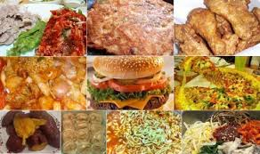

주로 저녁 식사 후 오후 9시부터 오전 6시 사이에 먹는 모든 음식이 해당되며, 보통은 여러 가지 이유로 밤을 샐 때 찾게 된다. 야간 교대 혹은 당직 근무 때 먹는 새벽 식사도 야식에는 포함되는데, 이때 먹게 되는 야식은 주간 근무의 중식과 비슷하다. 보통 라면을 가장 많이 먹는 편이긴 하지만, 과자류, 치킨 같은 고기류도 많다. 가장 피로한 시간대에 찾게 되는 음식이니만큼 보통 기름기 있거나 매콤하고, 짭잘하고, 달달한 음식을 야식으로 먹게 되는데, 요리를 하기보다는 주로 치킨, 피자, 족발, 닭발 등의 배달 음식을 먹거나 간단하게 파전, 오징어볶음 등의 야매요리를 만들어서 술과 곁들여 먹는 경우가 많다. 대학생에게는 '거의 삼시 세끼보다 중요한 끼니로서 진정한 친목은 원룸이나 기숙사에서 야식을 같이 먹으며 다진다'는 말이 있다. 단, 집에서 부모님과 같이 사는 경우가 대부분인 통학생에게는 해당되지 않는 얘기다. 해군의 함정처럼 24시간 당직 근무하는 곳은 간단한 야식이 나오는데, 야간 근무조라면 이때 배불러도 무조건 먹어둬야 한다. 안 그러면 실전상황이 벌어졌을 때 잠도 못자고 깨어 있어야하는데 이 때 배고파 미친다. 그러니 기회가 있으면 바로바로 먹어야 한다.
